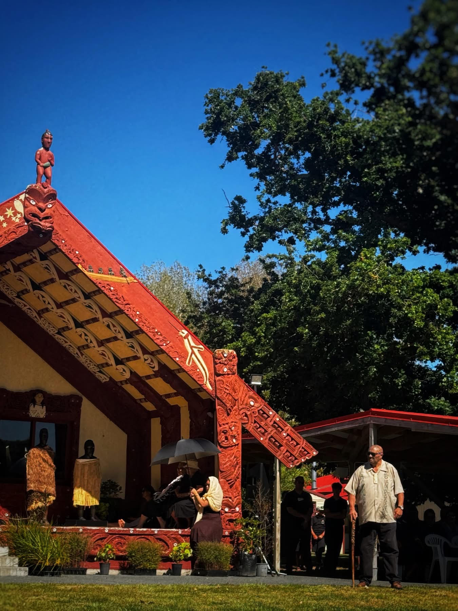

02 / THE BACKGROUND
The History of Te Tiriti
To understand the Treaty, it is important to understand
the circumstances in Aotearoa before, during and after 1840.

Photograph done by Te Tairawhiti.
BEFORE 1840
Māori authority and relationships
Māori communities already had established systems
of leadership, tikanga, trade and relationships.
Hapū and iwi exercised authority over their lands,
people and resources through their own structures
of rangatiratanga.
1835
He Whakaputanga
A group of northern rangatira declared the
independence of the United Tribes of New Zealand
through He Whakaputanga o te Rangatiratanga o Nu
Tireni. This declaration recognised Māori authority
and independence.
JANUARY–FEBRUARY 1840
The Treaty is prepared
William Hobson arrived in New Zealand with
instructions from the British government. An
English draft was prepared and translated into
te reo Māori by missionary Henry Williams and
his son Edward.
5 FEBRUARY 1840
Discussion at Waitangi
Māori rangatira gathered at Waitangi to hear and
discuss the proposed agreement. Rangatira debated
its meaning, possible consequences and the
relationship it would establish with the Crown.
6 FEBRUARY 1840
The first signing
Te Tiriti was first signed at Waitangi by a group
of Māori rangatira and representatives of the
Crown. Copies were subsequently taken to other
parts of the country for further signatures.
AFTER 1840
Continuing consequences
The Crown's actions and later government policies
contributed to major changes in Māori land
ownership and authority. Land loss, conflict and
breaches of Treaty promises have had lasting
effects on Māori communities.
Why does the history matter?
The history helps explain why Te Tiriti is not simply an
event from the past. Its promises, the differences between
the texts and the consequences of Crown actions remain
important to understanding relationships in Aotearoa today.
03 / THE AGREEMENT
The Three Articles
The agreement contains three articles. Each addresses
a different part of the relationship between Māori
and the Crown.
ARTICLE 01
Kāwanatanga
Government and authority
In the Māori text, rangatira granted the Crown
kāwanatanga, commonly understood as a form of
governance. In the English text, the wording refers
to the ceding of sovereignty to the Crown.
The difference between these terms is significant.
It has contributed to ongoing discussion about the
authority the Crown was given and the authority
Māori expected to retain.
ARTICLE 02
Tino Rangatiratanga
Authority and protection
The Māori text guarantees rangatira, hapū and Māori
the unqualified exercise of tino rangatiratanga over
their lands, villages and taonga.
The English text guarantees full, exclusive and
undisturbed possession of lands, forests, fisheries
and other properties. It also gives the Crown an
exclusive right to purchase land that Māori choose
to sell.
ARTICLE 03
Ōritetanga
Rights and protection
The third article promises Māori the Crown's
protection and the rights and privileges of British
subjects. It is commonly associated with equal
citizenship rights and protection.
The article is important when considering fairness,
equal treatment and the responsibilities of the
Crown towards Māori.